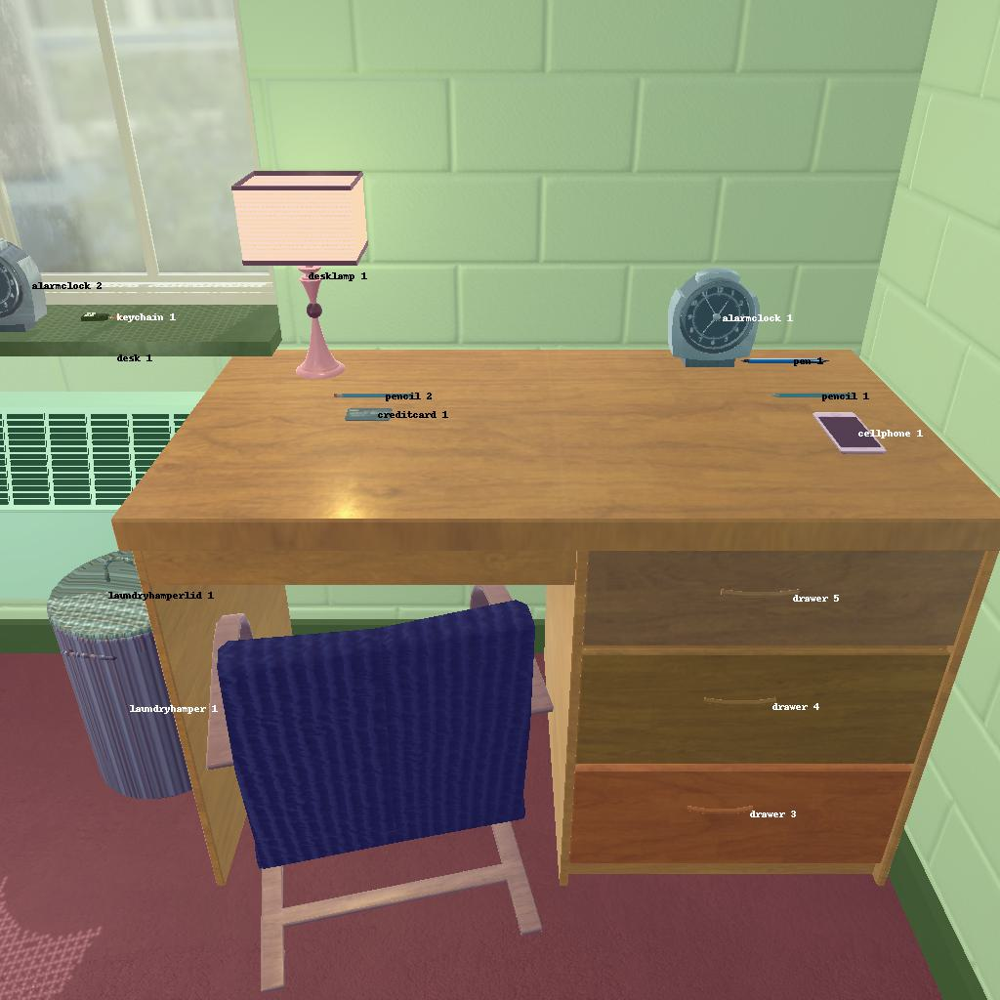

---------------------------------------------------------task: 8---------------------------------------------------------
--------------------------------------------------------------------------------------------------------------------------------------------------------------------
--------------------------------------------------------------------------------------------------------------------------------------------------------------------
Step:--------------------------------------------------------------------------5-------------------------------------------------------------------------------
----------------------------------------
VLM Prompt:
Image1:
Image2:
**Instruction**
1. Analyze the provided image to identify all visible household objects, focusing on those relevant to the task description "put some laptop on desk."
2. Use the analysis of the image and the task hint "The agent must find an object of the desired type, pick it up, find the correct location to place it, and put it down there." to answer the question: what is the most reasonable action in the choices for the task description "put some laptop on desk"?
4. Decide and write the answer using the template: The answer is: (i): , where i is the real number. If there is no desired object in the image, search every place based on **Initial Observation** to find the object. And if no one is exactly correct, choose a similar answer.
**Initial Observation**
You are in the middle of a room. Looking quickly around you, you can see bed (1), garbagecan (1), desk (1), sidetable (1), drawer (1-5), laundryhamper (1)
**Answer Choices**
(1): go to bed 1
(2): go to garbagecan 1
(3): go to desk 1
(4): go to sidetable 1
(5): go to drawer 1
(6): go to drawer 2
(7): go to laundryhamper 1
(8): go to drawer 5
(9): close drawer 4
(10): take alarmclock 1 from drawer 4
(11): take laundryhamperlid 1 from drawer 4
(12): take alarmclock 2 from drawer 4
(13): take cellphone 1 from drawer 4
(14): take creditcard 1 from drawer 4
(15): take pen 1 from drawer 4
(16): take pencil 1 from drawer 4
(17): take pencil 2 from drawer 4
(18): take keychain 1 from drawer 4
(19): use desklamp 1
(20): examine drawer 4
**Answer**
Let's think step by step by following the instructions.
----------------------------------------
----------------------------------------
Original Response:
The task is to "put some laptop on desk." From the initial observation, we know that there is a desk (1) in the room. Looking at the images provided, we can see that there is no laptop visible on the desk or in the open drawer (drawer 4). Therefore, we must search every place based on the initial observation to find the object.
Since the laptop is not visible in the image, the most reasonable action would be to go to each location where a laptop might be found. The places to search would be the bed, sidetable, and all drawers, as these are common places where one might place a laptop.
The answer is: (3): go to desk 1, (4): go to sidetable 1, (5): go to drawer 1, (6): go to drawer 2, and (8): go to drawer 5. Since we need to choose only one action and the task specifically mentions placing the laptop on the desk, the first place to check would be the desk itself, if there are any compartments or places on or in the desk where a laptop might be placed.
The answer is: (3): go to desk 1.
----------------------------------------
----------------------------------------
>>> Refine Original VLM Response and Get Pure Action: go to desk 1, (4): go to sidetable 1, (5): go to drawer 1, (6): go to drawer 2, and (8): go to drawer 5
----------------------------------------
-----------------------------------------------------------------
Running time: 10.643672466278076 seconds
Total Money: 3.344219999999998
-----------------------------------------------------------------
-----------------------------------------------------------------
Text Observation:Nothing happens.
-----------------------------------------------------------------
UNSUCCEED